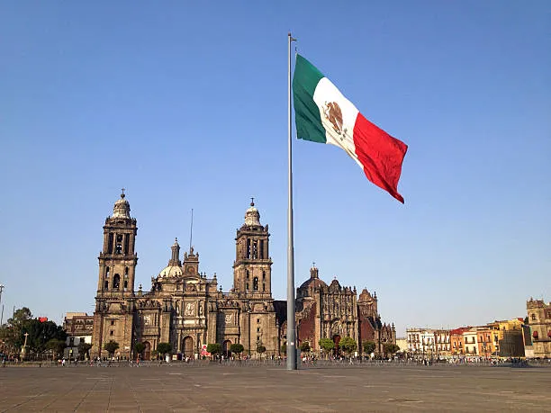
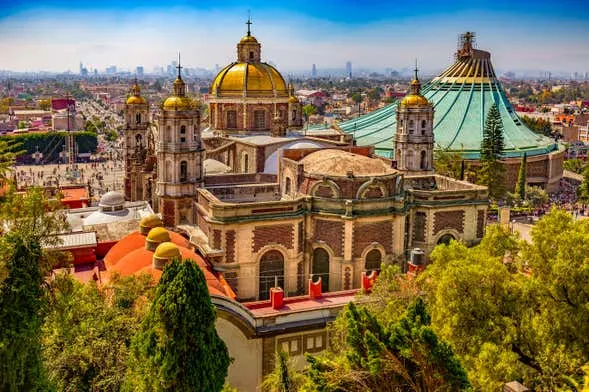
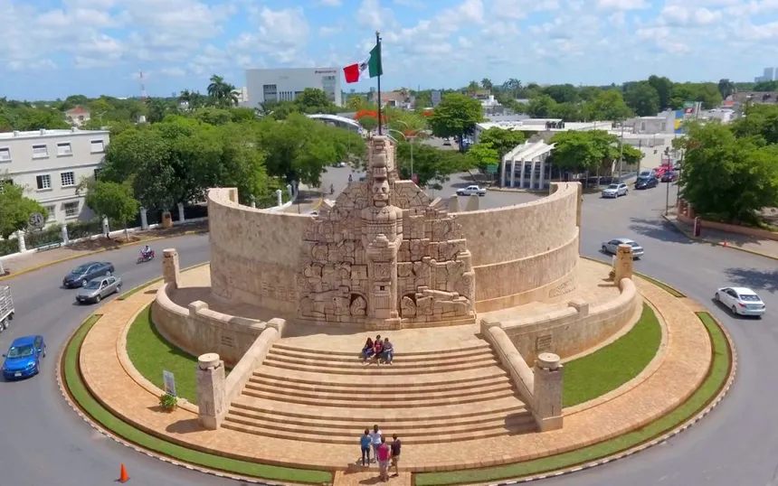
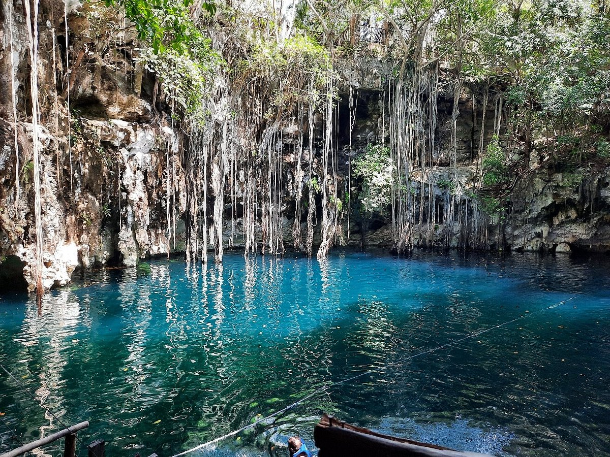
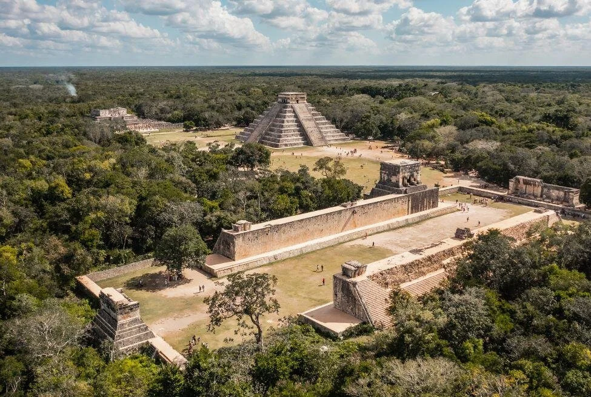

Embárcate en una travesía inolvidable diseñada para sumergirte en los tres grandes pilares que definen la identidad de México: la grandeza de sus civilizaciones prehispánicas, el legado vibrante de su época colonial y la serenidad paradisíaca del Caribe. Este itinerario ha sido cuidadosamente estructurado para ofrecerte una inmersión cultural profunda sin renunciar a la comodidad ni al descanso.
Comenzarás el viaje en el altiplano central, tomando el pulso a la monumental Ciudad de México, una metrópoli cosmopolita donde los rascacielos conviven con templos mexicas y barrios bohemios llenos de arte. Desde allí, viajarás al pasado ante las imponentes pirámides de Teotihuacán, antes de dar el salto hacia el sureste para adentrarte en la península de Yucatán. En Mérida, la "Ciudad Blanca", descubrirás la elegancia de sus casonas señoriales, la calidez de su gente y una de las gastronomías más celebradas del país, sirviendo además como puerta de entrada a las joyas arquitectónicas del mundo maya como Uxmal y la legendaria Chichén Itzá, pasando por el encanto monocromático del pueblo mágico de Izamal y refrescándote en cenotes sagrados escondidos en la selva.
Para poner el broche de oro a la expedición, cambiarás las botas de explorador por la brisa marina de la Riviera Maya, donde disfrutarás de jornadas de auténtica desconexión en régimen de Todo Incluido frente a playas de arena blanca y aguas cristalinas. Un recorrido completo, equilibrado y con asistencia continua, pensado tanto para quienes visitan México por primera vez como para viajeros que buscan vivir sus contrastes más emblemáticos con total tranquilidad.
Día 1: Origen – Ciudad de México

Llegada al Aeropuerto Internacional de la Ciudad de México. Recepción por parte de nuestro equipo local y traslado privado hacia el hotel seleccionado. Resto del día libre para aclimatarse a la altitud y dar un primer paseo por el Paseo de la Reforma o la Zona Rosa. Alojamiento.
Día 2: Ciudad de México (Centro Histórico y Coyoacán)
Desayuno. Por la mañana, recorrido guiado por el corazón histórico de la capital: la Plaza de la Constitución (Zócalo), la Catedral Metropolitana, el Palacio Nacional y los vestigios del Templo Mayor azteca. Por la tarde, traslado al bohemio barrio de Coyoacán para recorrer sus plazas arboladas, mercados de artesanía y los alrededores de la Casa Azul de Frida Kahlo. Noche libre para disfrutar de la gastronomía local. Alojamiento.
Día 3: Teotihuacán y Basílica de Guadalupe

Desayuno. Salida hacia la zona arqueológica de Teotihuacán, la "Ciudad de los Dioses", para caminar por la Calzada de los Muertos y admirar las pirámides del Sol y de la Luna. Almuerzo tradicional en un restaurante local con degustación de productos derivados del maguey. De regreso a la capital, parada en el Santuario de la Basílica de Guadalupe, el recinto mariano más importante de América. Alojamiento.
Día 4: Ciudad de México – Mérida (La Ciudad Blanca)

Desayuno. A la hora acordada, traslado al aeropuerto para abordar el vuelo doméstico con destino a Mérida, capital del estado de Yucatán. Llegada, traslado al hotel y visita panorámica por su centro histórico de arquitectura colonial, el Paseo de Montejo y la Plaza Grande. Por la noche, oportunidad de disfrutar de la tradicional trova yucateca al aire libre. Alojamiento.
Día 5: Mérida – Zona Arqueológica de Uxmal – Cenote – Mérida

Desayuno. Excursión hacia Uxmal, una de las joyas arquitectónicas de la Ruta Puuc, célebre por la Pirámide del Adivino y el Cuadrángulo de las Monjas. Tras la visita cultural, parada refrescante para nadar en un cenote de aguas cristalinas en medio de la selva yucateca. Regreso a Mérida al final de la tarde y tiempo libre. Alojamiento.
Día 6: Mérida – Izamal – Chichén Itzá – Riviera Maya

Desayuno y salida por carretera hacia el Caribe mexicano. Primera parada en Izamal, conocido como el "Pueblo Amarillo" por sus fachadas monocromáticas y su imponente convento franciscano. Continuación hacia Chichén Itzá, maravilla del mundo moderno, donde recorreremos el Templo de Kukulkán, el Juego de Pelota y el Observatorio. Almuerzo buffet regional y traslado final hasta el resort en la Riviera Maya. Régimen Todo Incluido.
Días 7 y 8: Riviera Maya (Días Libres)
Días completos a su disposición en régimen de Todo Incluido. Tiempo ideal para relajarse en playas de arena blanca, practicar snorkel en los arrecifes de coral o realizar excursiones opcionales como la zona arqueológica de Tulum frente al mar, la reserva de Sian Ka'an o parques eco-arqueológicos como Xcaret y Xel-Há. Alojamiento.
Día 9: Riviera Maya – Cancún – Vuelo de Regreso

Desayuno. Mañana libre para aprovechar las últimas horas de playa o realizar compras de última hora. A la hora indicada, traslado privado al Aeropuerto Internacional de Cancún para tomar el vuelo de regreso a ciudad de origen. Noche a bordo.